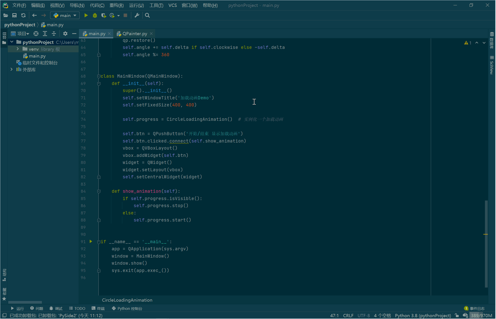

使用Qt for Python实现加载动画
本文最后更新于：2020年12月3日 下午
简述
之前用 Qt 做程序界面的时候，有一个小问题就是有的操作可能比较耗时，比如说点击一个按钮，程序需要一段时间来处理，然后这时候界面也卡住不能操作了，需要等待处理完成，我自己也是使用软件的，很显然这样用户体验极差。很常见的做法就是添加一个加载动画，加载完之后再自动关闭加载动画，体验就一下子上来了🤪
不过说归说，这事情却一直没有做，今天恰好有时间就查资料，把这事给解决了~
思路
首先还是简要说下思路。在开始做之前，甚至开始查资料之前，我理想的状态就是这个动画应该独立于窗口之外，背景应该是透明的，应该有显示动画和关闭动画的接口。
第一点，独立于窗口之外，很容易想到动画应该放到一个单独的窗口中，比如用单独的 QWidget 放动画，这样就可以在需要的时候将这个窗口弹出或关闭。
第二点，也是比较关键的一点，背景应该透明。默认的窗口首先背景就不是透明的，并且还有标题栏，必须要去掉或者隐藏掉标题栏，透明背景应该有接口可以很容易实现。
以上是想法，实际上确实也很容易，上述两点的核心代码就是这样：
self.setAttribute(Qt.WA_TranslucentBackground) # 透明效果
self.setWindowFlags(Qt.FramelessWindowHint | Qt.BypassWindowManagerHint | Qt.Tool | Qt.WindowStaysOnTopHint) # 无边框, 随主窗口关闭, 置顶代码
最后留一个演示代码~
# -*- coding: utf-8 -*-
"""
Author: mxy
Email: mxy493@qq.com
Date: 2020/12/3
Desc: Qt实现圆形加载动画
"""
import sys
from PySide2.QtCore import QTimer
from PySide2.QtGui import QColor, QPainter, Qt
from PySide2.QtWidgets import QMainWindow, QApplication, QPushButton, QWidget, QVBoxLayout
class CircleLoadingAnimation(QWidget):
"""加载动画
progress = CircleProgressBar(600)
progress.start() # 开始显示加载动画
# do something ...
progress.stop() # 停止显示
"""
def __init__(self, size=100, color=QColor(24, 189, 155), clockwise=True):
super().__init__()
self.setAttribute(Qt.WA_TranslucentBackground) # 透明效果
self.setWindowFlags(Qt.FramelessWindowHint # 无边框
| Qt.BypassWindowManagerHint
| Qt.Tool # 随父窗口关闭
| Qt.WindowStaysOnTopHint) # 置顶
self.setFixedSize(size, size)
self.angle = 0
self.clockwise = clockwise # 顺时针方向
self.Color = color # 圆圈颜色
self.delta = 36
self._timer = QTimer(self, timeout=self.update) # 计时器，定时刷新界面
def start(self):
self._timer.start(100) # 0.1s更新刷新一次界面
self.show() # 显示动画窗口
def stop(self):
self._timer.stop() # 停止计时器
self.close() # 关闭动画窗口
def paintEvent(self, event):
qp = QPainter(self)
qp.setRenderHint(QPainter.Antialiasing)
qp.translate(self.width() / 2, self.height() / 2)
side = min(self.width(), self.height())
qp.scale(side / 100.0, side / 100.0)
qp.rotate(self.angle)
qp.save()
qp.setPen(Qt.NoPen)
color = self.Color.toRgb()
for i in range(11):
color.setAlphaF(1.0 * i / 10)
qp.setBrush(color)
qp.drawEllipse(30, -10, 20, 20)
qp.rotate(36)
qp.restore()
self.angle += self.delta if self.clockwise else -self.delta
self.angle %= 360
class MainWindow(QMainWindow):
def __init__(self):
super().__init__()
self.setWindowTitle('加载动画Demo')
self.setFixedSize(400, 400)
self.progress = CircleLoadingAnimation() # 实例化一个加载动画
self.btn = QPushButton('开始/结束 显示加载动画')
self.btn.clicked.connect(self.show_animation)
vbox = QVBoxLayout()
vbox.addWidget(self.btn)
widget = QWidget()
widget.setLayout(vbox)
self.setCentralWidget(widget)
def show_animation(self):
if self.progress.isVisible():
self.progress.stop()
else:
self.progress.start()
if __name__ == '__main__':
app = QApplication(sys.argv)
window = MainWindow()
window.show()
sys.exit(app.exec_())Demo

本博客所有文章除特别声明外，均采用 CC BY-SA 4.0 协议 ，转载请注明出处！